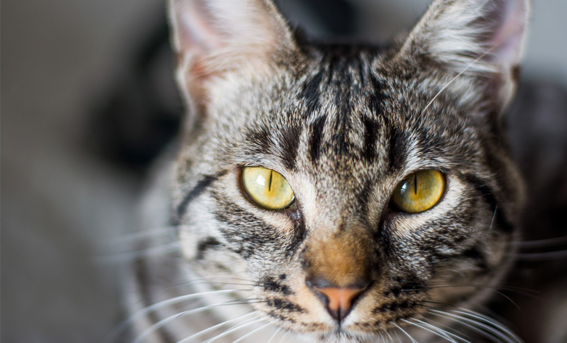
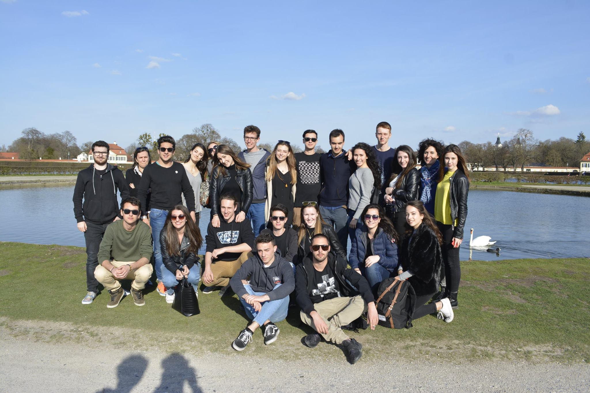
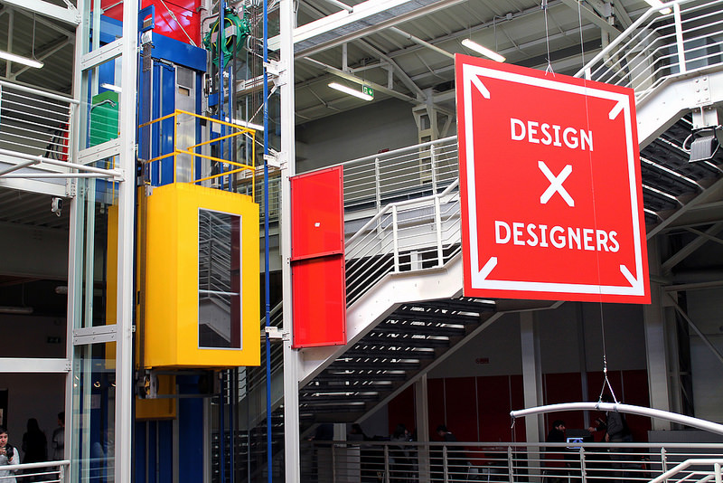

Ciao a tutti! Mi chiamo Annamaria Celeste ma tutti mi chiamano Anna.
Annamaria è il nome della mia nonna materna e Celeste è quello della mia nonna paterna.
Quest'ultima purtroppo io non l'ho mai conosciuta, ma sono molto orgogliosa di portare il suo nome.
Ho 19 anni, sono nata il 20/05/98 e abito a Rho(MI). Vivo con i miei genitori, mio fratello e un gattone che amo alla follia.

Rho mi è sempre "stata stretta" perchè a mio parere non offre molte attività stimolanti soprattutto per i giovani.
Per questo appena posso fuggo a Milano.
Ho frequentato il liceo Ettore Majorana, indirizzo scientifico tradizionale.
Per me gli anni del liceo sono stati stupendi: molti dei miei ex compagni di classe sono anche i miei migliori amici!

Quest'anno ho iniziato il corso di laurea di Design degli interni al Politecnico di Milano.
Per me è stato un po' come fare un salto nel vuoto perchè non avevo mai affrontato materie di questo genere.
Ora però sono molto contenta della mia scelta e sento di aver imboccato la strada giusta.

Nel tempo libero amo:
scoprire posti nuovi
leggere libri fantasy, il mio preferito è Il signore degli anelli
guardare serie tv
cucinare dolci
POLITECNICO DI MILANO - SCUOLA DEL DESIGN - C.D.L DESIGN DEGLI INTERNI I2 - ANNAMARIA VILLA